Simulado 1
No meio do caminho
Para medir onde você está nas duas provas e ajustar o estudo enquanto o edital não sai.
30 dias após a compra

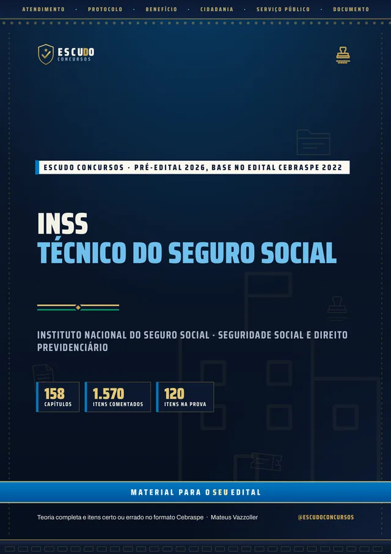
1.570itens
comentados
O INSS pediu um novo concurso, mas ele ainda não foi autorizado: não há banca contratada, edital nem data. Quem estuda agora estuda pelo programa do último edital, sem esperar. Curso feito sobre o Edital nº 1 de 2022 do Cebraspe, na ordem dele, com a lei na redação vigente em 18/11/2026 e itens de certo ou errado com gabarito comentado.
Pré-edital: baseado no último edital (nº 1/2022, Cebraspe). Atualizado quando sair o novo
de R$ 47 por 21% OFF
R$37
com o cupom INSS37 até 31/12/2026. Pelo botão, o cupom já vai preenchido.
R$47
Curso completo, com acesso imediato.
O concurso
O INSS pediu ao governo federal um novo concurso, com 10 mil vagas, 8.501 delas para Técnico do Seguro Social. Até a conferência de 18/11/2026, o pedido não tinha autorização, a banca não estava contratada e não havia edital. Nenhuma data foi anunciada, e este curso não promete nenhuma.
Por isso o curso segue o programa e o formato do último edital do cargo, o Edital nº 1 de 2022 do Cebraspe, publicado no DOU em 15/09/2022. A prova de 2022 teve 120 itens de certo ou errado em 3 horas e 30 minutos: 50 de Conhecimentos Básicos (P1) e 70 de Conhecimentos Específicos (P2), sobre Seguridade Social e Direito Previdenciário. O curso treina nesse formato e ensina a ler o item, porque no Cebraspe um item errado anula um certo.
Estudar agora pelo programa do último edital economiza meses. Quando o edital novo sair, a banca, o formato e o programa podem mudar: o programa será conferido item por item e o curso, ajustado. A lei, que é o que mais pesa na prova, vale na redação de 18/11/2026.
| Prova | Disciplinas | Itens |
|---|---|---|
| P1 | Conhecimentos Básicos: Língua Portuguesa, Ética no Serviço Público, Raciocínio Lógico-Matemático, Noções de Direito Constitucional, Noções de Direito Administrativo (com a Lei 8.112/1990) e Noções de Informática | 50 |
| P2 | Conhecimentos Específicos: Seguridade Social e Direito Previdenciário (Leis 8.212 e 8.213, Decreto 3.048, LOAS e BPC, EC 103/2019 e IN PRES/INSS 128/2022) | 70 |
| Em 2022, o mínimo era de 10 pontos na P1, 21 na P2 e 36 no conjunto. É só referência: o edital novo pode mudar as regras. | 120 |
O formato
Você estuda lendo, no seu ritmo, pela área de membros da Hotmart ou com os arquivos baixados. Como o edital novo ainda não existe, o curso foi feito sobre o programa do Edital nº 1 de 2022 do Cebraspe, item por item e na ordem dele, com a legislação na redação vigente em 18/11/2026, inclusive as Leis de 2024 a 2026 que mexeram na Lei 8.213 e a Lei 15.371/2026, que vale a partir de 01/01/2027.
Páginas reais do PDF
Toque numa página para ver em tamanho maior.
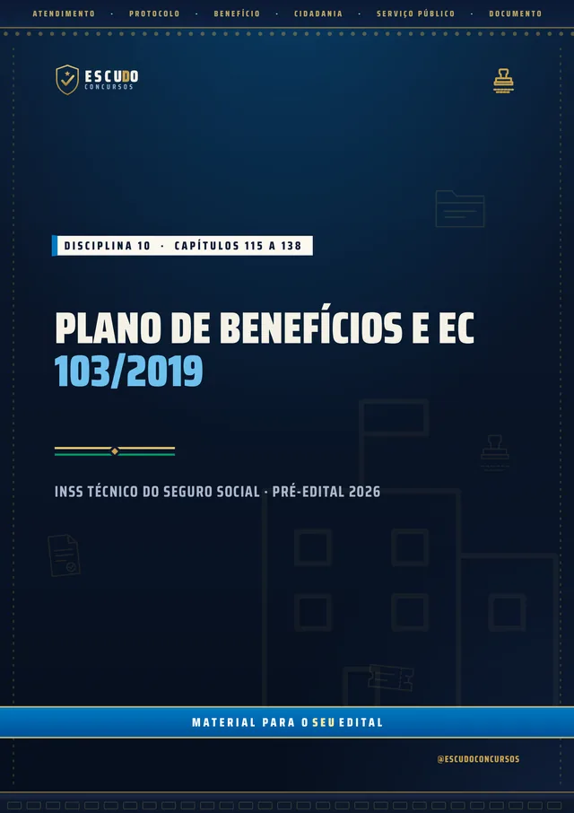
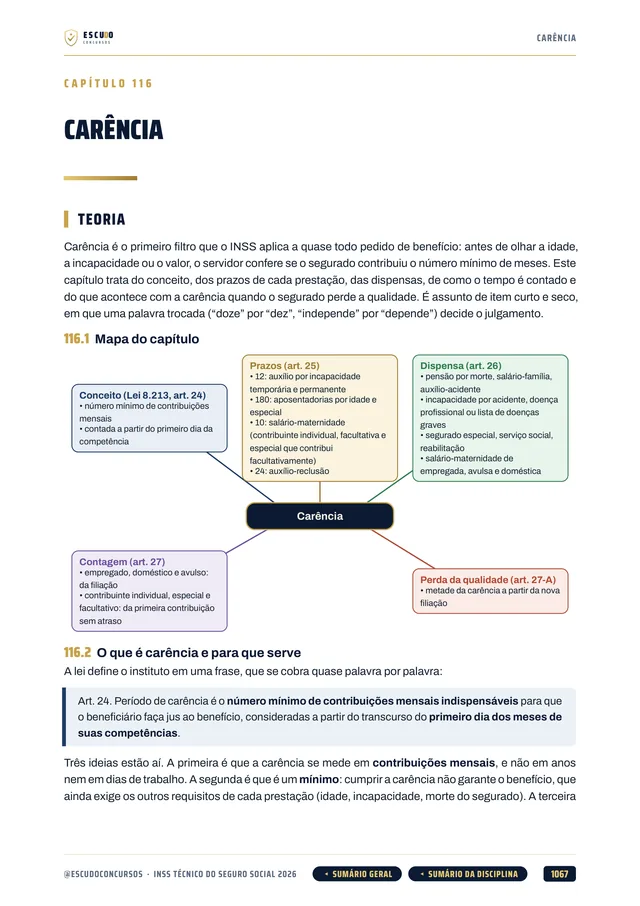
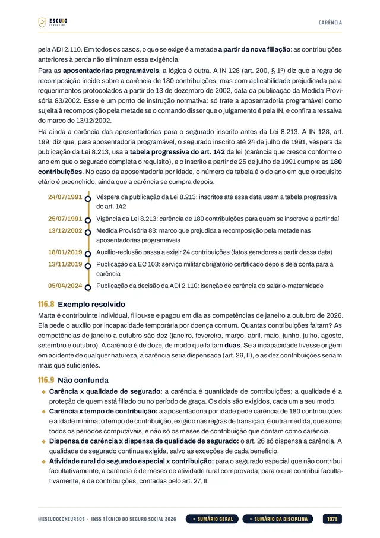
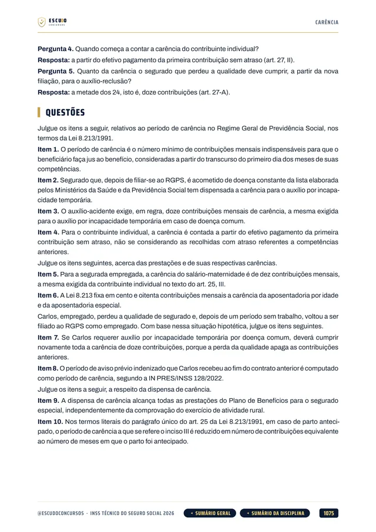
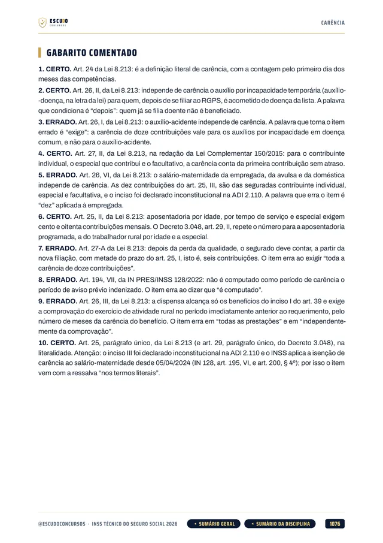
100% em PDF · Garantia de 7 dias · Pagamento pela Hotmart
O que você recebe
Curso em PDF organizado em módulos pelas disciplinas do edital, com 1.428 páginas no padrão visual ESCUDO, para ler no computador, no tablet, no celular ou no app da Hotmart. Não há videoaulas.
158 capítulos pelo programa do edital de 2022: Língua Portuguesa (22 capítulos), Ética no Serviço Público (2), Direito Constitucional (8), Direito Administrativo com a Lei 8.112 (26), Informática (12), Raciocínio Lógico-Matemático (7) e todo o Direito Previdenciário (78), mais 2 capítulos sobre o servidor público e a saúde e um capítulo de abertura sobre a prova e o plano de estudo.
1.570 itens inéditos de certo ou errado, 10 por capítulo, todos com gabarito comentado: por que o item está certo ou onde está o erro, no estilo do Cebraspe.
Direito Previdenciário em 78 capítulos: Seguridade Social, segurados e dependentes, custeio, Plano de Benefícios com a EC 103/2019, LOAS e BPC, Regimes Próprios e compensação, com as Leis 8.212 e 8.213, o Decreto 3.048 e a IN PRES/INSS 128/2022 na redação vigente em 18/11/2026. É a prova P2 inteira, que vale 70 dos 120 itens.
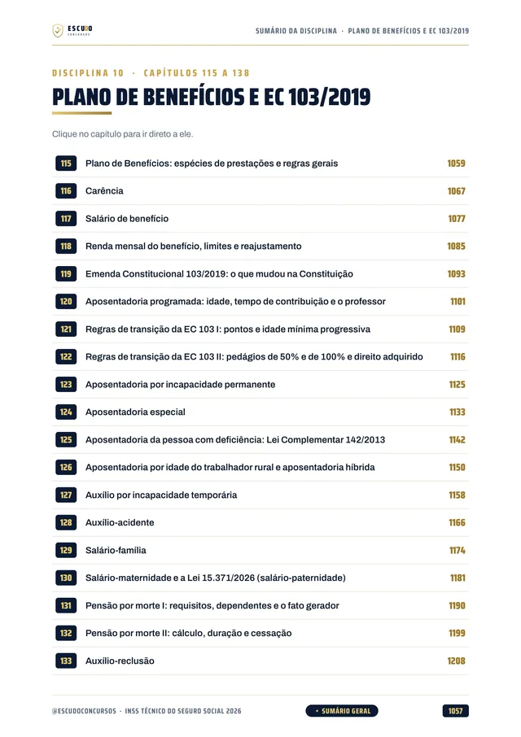
Noções de Direito Administrativo em 26 capítulos, com a Lei 8.112/1990 em nove deles, a Lei 9.784/1999 e o quadro comparativo de sindicância e processo administrativo disciplinar, além de Ética no Serviço Público com os Decretos 1.171/1994 e 6.029/2007.
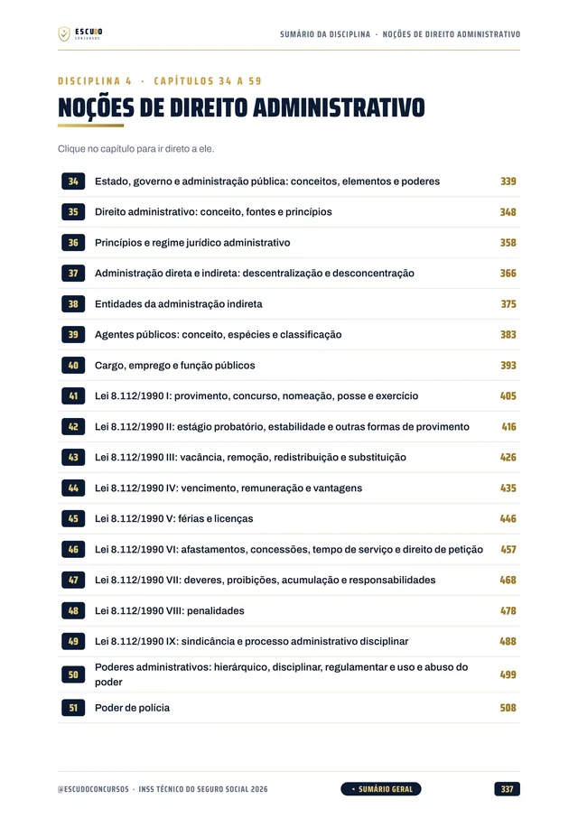
Teoria com recursos para memorizar: mapa de cada capítulo, lei transcrita onde o número ou a palavra decide o item, quadros de "pegadinha" e "não confunda", revisão relâmpago e teste de memória no fim de cada capítulo.
Navegação clicável: do sumário você vai direto ao capítulo, e volta pelo botão do rodapé.
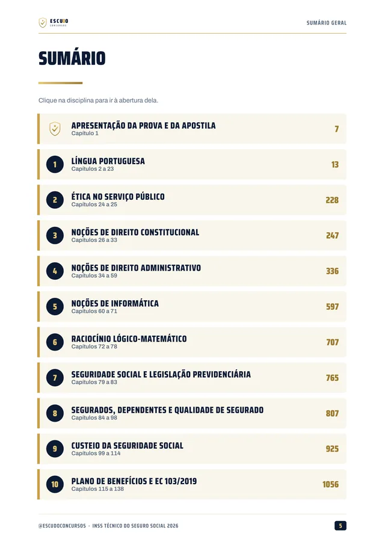
2 simulados inéditos no desenho da prova de 2022 (120 itens de certo ou errado: 50 de P1 e 70 de P2), cada um com caderno de itens e caderno de comentários.
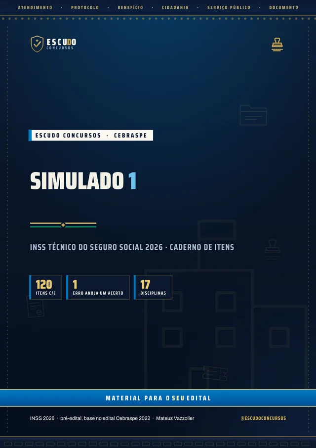
Área de membros
| Módulo | Conteúdo | Liberação |
|---|---|---|
| M0 Comece aqui | Apresentação + capítulo 001 (como é a prova e como usar o curso). Bônus: PDF completo para baixar e imprimir | Na compra; o PDF completo no 8º dia |
| M1 Língua Portuguesa I | Capítulos 002 a 009 | Na compra |
| M2 Língua Portuguesa II | Capítulos 010 a 016 | Na compra |
| M3 Língua Portuguesa III | Capítulos 017 a 023 | Na compra |
| M4 Ética e Constitucional | Capítulos 024 a 033 | Na compra |
| M5 Direito Administrativo I | Capítulos 034 a 040 | Na compra |
| M6 Lei 8.112/1990 | Capítulos 041 a 048 | Na compra |
| M7 Direito Administrativo II | Capítulos 049 a 055 | Na compra |
| M8 Direito Administrativo III | Capítulos 056 a 059 | Na compra |
| M9 Noções de Informática I | Capítulos 060 a 066 | Na compra |
| M10 Noções de Informática II | Capítulos 067 a 071 | Na compra |
| M11 Raciocínio Lógico | Capítulos 072 a 078 | Na compra |
| M12 Seguridade Social | Capítulos 079 a 083 | Na compra |
| M13 Segurados do RGPS I | Capítulos 084 a 091 | Na compra |
| M14 Segurados do RGPS II | Capítulos 092 a 098 | Na compra |
| M15 Custeio da Seguridade I | Capítulos 099 a 105 | Na compra |
| M16 Custeio da Seguridade II | Capítulos 106 a 110 | Na compra |
| M17 Prazos e Recursos | Capítulos 111 a 114 | Na compra |
| M18 Plano de Benefícios I | Capítulos 115 a 122 | Na compra |
| M19 Plano de Benefícios II | Capítulos 123 a 130 | Na compra |
| M20 Plano de Benefícios III | Capítulos 131 a 138 | Na compra |
| M21 Legislação especial | Capítulos 139 a 144 | Na compra |
| M22 LOAS e BPC | Capítulos 145 a 149 | Na compra |
| M23 RPPS e Normas do INSS | Capítulos 150 a 158 | Na compra |
| M24 Simulado 1 | 120 itens de certo ou errado e caderno de comentários | 30 dias após a compra |
| M25 Simulado 2 | 120 itens de certo ou errado e caderno de comentários | 60 dias após a compra |
Treino no formato da prova
Cada simulado tem 120 itens de certo ou errado, 50 de Conhecimentos Básicos (P1) e 70 de Específicos (P2), no desenho da prova de 2022, com caderno de itens e caderno de comentários.
Simulado 1
Para medir onde você está nas duas provas e ajustar o estudo enquanto o edital não sai.
30 dias após a compra
Simulado 2
Liberado 60 dias após a compra, para o seu último teste. O concurso ainda não tem data de prova.
60 dias após a compra
Para quem é
Para quem quer ser Técnico do Seguro Social do INSS e prefere começar agora, pelo programa do último edital, a esperar o edital novo. O Direito Previdenciário, que vale 70 dos 120 itens da prova de 2022, vem coberto por inteiro.
Você tem 7 dias de garantia pela Hotmart. Se não for o que você esperava, pede o reembolso pela própria Hotmart, dentro do prazo.
Sem surpresa na área de membros
Na compra: todas as disciplinas em PDF, uma por módulo, com a teoria e as questões comentadas. É o curso inteiro, para começar a estudar no mesmo dia.
8 dias após a compra: o PDF completo para imprimir. É o mesmo conteúdo dos módulos num arquivo só, liberado depois da garantia de 7 dias.
Simulado 1: 30 dias após a compra, para medir onde você está no meio da preparação.
Simulado 2: 60 dias após a compra, para o último teste, porque ainda não há data de prova marcada.
O PDF completo e os simulados aparecem bloqueados na área de membros até a data de cada um: não é conteúdo faltando, é a liberação programada.
Dúvidas
Não. O INSS pediu o concurso, mas, até a conferência de 18/11/2026, ele não tinha autorização, banca contratada nem edital. Não há data, e o curso não promete nenhuma. Por isso ele é de pré-edital e segue o último edital do cargo.
Porque é o último edital do cargo de Técnico do Seguro Social, do Cebraspe (Edital nº 1 de 2022). O programa dele é a melhor referência que existe: Seguridade Social e Direito Previdenciário, mais Língua Portuguesa, Ética, Raciocínio Lógico, Direito Constitucional, Direito Administrativo e Informática.
Pode acontecer: no concurso novo a banca e o formato podem ser outros. O conteúdo de lei continua valendo, e quando o edital sair o programa será conferido item por item e o curso, ajustado. O treino de certo ou errado serve de base mesmo que o formato mude.
Está na redação vigente em 18/11/2026, inclusive as leis de 2024 a 2026 que alteraram a Lei 8.213 e a Lei 15.371/2026 (salário-paternidade), que vale a partir de 01/01/2027. A Previdência muda muito: com o edital novo, o curso é reconferido.
Não. É um curso 100% em PDF: teoria, itens comentados e simulados para ler e resolver.
O acesso é imediato depois da confirmação do pagamento, pela área de membros da Hotmart (web ou app). O PDF completo para baixar e imprimir é liberado no 8º dia.
O Simulado 1 é liberado 30 dias após a compra e o Simulado 2, 60 dias após a compra, porque o concurso ainda não tem data de prova.
Em 2022, cada item certo valia 1 ponto e cada item errado tirava 1 ponto, e o item em branco valia zero: um erro anula um acerto. Por isso o curso ensina a ler o item e a decidir quando chutar. O capítulo 001 explica a estratégia.
Não como curso completo. Os Conhecimentos Básicos são comuns, mas o Analista tem programa próprio. Este curso é para Técnico do Seguro Social.
Não. Os 1.570 itens de treino e os dos simulados são inéditos, escritos no estilo do Cebraspe a partir do conteúdo programático do edital de 2022.
Você tem 7 dias de garantia pela Hotmart. Se não for o que você esperava, pede o reembolso.
INSS 2026 · Técnico do Seguro Social · pré-edital
de R$ 47 por 21% OFF
R$37
com o cupom INSS37 até 31/12/2026.
R$47
Curso completo, com acesso imediato.
Material para o SEU edital. ESCUDO Concursos.
Continue estudando
 IBGE 2026 · Edital 03/2026 · CesgranrioRecenseador IBGE (12º Censo Agro)
IBGE 2026 · Edital 03/2026 · CesgranrioRecenseador IBGE (12º Censo Agro)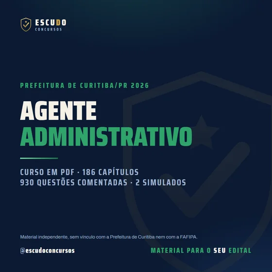
Prefeitura de Curitiba/PR 2026 · FAFIPAAgente Administrativo de Curitiba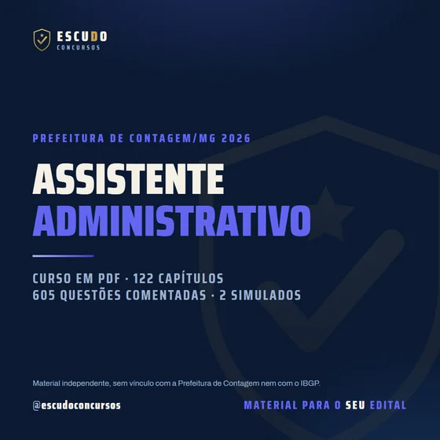
Prefeitura de Contagem/MG 2026 · IBGPAssistente Administrativo de Contagem/MG